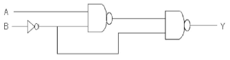
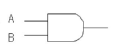
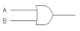
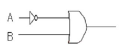
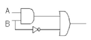

전기기능장 (2008-03-30 기출문제)
1과목: 임의구분
1. 3상 발전기의 전기자 권선에 Y결선을 채택하는 이유로 볼 수 없는 것은?
- 중성점을 이용할 수 있다
- 같은 상전압이면 △결선보다 높은 선간전압을 얻을 수 있다.
- 같은 상전압이면 △결선보다 상절연이 쉽다.
- 발전기 단자에서 높은 출력을 얻을 수 있다.
(정답률: 89%)

2. 일반적으로 공진형 컨버터에 사용되지 않는 소자는?
- MOS-FET
- SCR
- 트랜지스터
- IGBT
(정답률: 64%)
3. % 동기 임피던스가 130[%]인 3상 동기발전기의 단락비는 약 얼마인가?
- 0.7
- 0.77
- 0.8
- 0.88
(정답률: 81%)
4. 전동기가 매분 1200 회전하여 9.42[Kw]의 출력이 나올 때 토크는 약 몇[kg.m] 인가?
- 6.65
- 6.90
- 7.65
- 7.90
(정답률: 80%)
5. 8 bi의 레지스터로 2진수를 저장하고자 할 때 부호화 된 2의 보수 표시방법으로 가능한 수의 범위는?
- +127 ~ -126
- +127 ~ -127
- +127 ~ -128
- +128 ~ -128
(정답률: 64%)
6. 변압기 여자 전류의 파형은?
- 파형이 나타나지 않는다.
- 사인파 이다.
- 구형파 이다.
- 왜형파 이다.
(정답률: 83%)
7. 커패시턴스에서 전압과 전류의 변화에 대한 설명으로 옳은 것은?
- 전압은 급격히 변화하지 않는다.
- 전류는 급격히 변화하지 않는다.
- 전압과 전류 모두가 급격히 변화한다.
- 전압과 전류 모두가 급격히 변화하지 않는다.
(정답률: 69%)
8. 바닥 통풍형과 바닥 밀폐형의 복합채널 부품으로 구성 된 조립 금속구조로 폭이(150mm)이하 이며, 주 케이블 트레이로부터 말단까지 연결되어 단일 케이블을 설치하는 게 사용하는 tray는?
- 통풍채널형 케이블 트레이
- 사다리형 케이블 트레이
- 바닥 밀폐형 케이블 트레이
- 트로프형 케이블 트레이
(정답률: 92%)
9. 전류 순시값 i=30sin ωt + 40sin(3ωt + 60')[A]의 실효값은 약 몇 [A] 인가?
- 25√2
- 30√2
- 40√2
- 50√2
(정답률: 59%)
10. 변압기,발전기,선로 등의 단락 보호용으로 사용되는 것으로서 보호할 회로의 전류가 정정치(整定値) 보다 커질 때 동작하는 계전기는?
- OVR
- OCR
- UCR
- SGR
(정답률: 85%)
11. 여러 주변장치에서 동시에 interrupt가 발생하여 bus 에서 신호의 혼돈이 발생하는 것을 방지하기 위한 하드웨어적인 방법은?
- polling
- daisy-chain
- cycle steal
- DMA(Direct Memory Access)
(정답률: 39%)
12. 0.1[H]인 코일의 리액턴스가 377[Ω]일 때 주파수는 약 몇[Hz] 인가?
- 60
- 120
- 360
- 600
(정답률: 55%)
13. 100[Ω]의 저항을 병렬로 무한히 연결하였을 때 합성 저항은 몇 [Ω] 인가?
- 1
- 0
- ∞
- 100
(정답률: 76%)
14. 3상 유도전동기의 전압이 200[V]이고, 전류가 8[A], 역률이 80[%]라 하면, 이 전동기를 10시간 사용했을 때의 전력량은 약 몇[kwh] 인가?
- 12.8
- 16.3
- 22.2
- 27.8
(정답률: 58%)
15. 다음 중 저항 부하시 맥동률이 가장 작은 정류방식은?
- 단상 반파식
- 단상 전파식
- 3상 반파식
- 3상 전파식
(정답률: 88%)
16. 20[KVA] 변압기 3대를 △결선하여 3상 전력을 보내던 중 한대가 고장나서 V 결선으로 하였다. 이 경우 3상 최대 출력은 약 몇 [KVA] 인가?
- 25
- 35
- 40
- 60
(정답률: 68%)
17. 전력용 반도체 소자 중 양방향으로 전류를 흘릴 수 있는 것은?
- GTO
- TRIAC
- DIODE
- SCR
(정답률: 80%)
18. 전가산기의 입력변수가 x, y, z 이고, 출력함수가 S, C 일 때 출력의 논리식으로 옳은 것은?
- S = x⊕y⊕z, C = xyz
- S = x⊕y⊕z, C = xy + xz + yz
- S = x⊕y⊕z, C = (x⊕y)z
- S = x⊕y⊕z, C = xy + (x + y)z
(정답률: 65%)
19. 다음 중에서 일반적으로 주기억장치에 사용되는 것은?
- 램(RAM)
- 플로피디스크
- 하드디스크
- 자기디스크
(정답률: 61%)
20. Z-80 마이크로프로세서에서 쌍방향 버스는?
- Address bus
- Control bus
- Data bus
- ALU
(정답률: 49%)
2과목: 임의구분
21. 3상 유도 전동기에서 2차측 저항을 2배로 하면 그 최대 토크는 몇 배로 되는가?
- 2배로 된다.
- 1/2로 줄어든다.
- √2배가 된다.
- 변하지 않는다.
(정답률: 88%)
22. D형 플립플롭의 현재 상태가 0 일 때 다음 상태를 1로 하기 위한 D의 입력 조건은?
- 1
- 0
- 1과 0 모두 가능
- 1에서 0으로 바뀌는 펄스
(정답률: 77%)
23. 어느 분권 발전기의 전압변동률이 6[%]이다. 이 발전기의 무부하 전압이 120[V]이면 정격 전부하 전압은 약 몇 [V] 인가? 다
- 96
- 100
- 113
- 125
(정답률: 73%)
24. 아파트, 주택, 사무실, 은행, 상점, 미용원 등의 건축물 종류에서 표준부하[VA/m2] 값은 얼마로 규정 하고 있는가?
- 5
- 10
- 20
- 30
(정답률: 71%)
25. 10진수 249를 16진수 값으로 변환한 것은?
- 189
- 9F
- FC
- F9
(정답률: 79%)
26. 셀룰라덕트 및 부속품은 제 몇 종 접지공사를 하여야 하는가?
- 제1종 접지공사
- 제2종 접지공사
- 제3종 접지공사
- 특별제3종 접지공사
(정답률: 88%)
27. 8비트 마이크로프로세서의 데이터 버퍼(Buffer)에 대한 설명으로 옳지 않은 것은?
- 범용 컴퓨터의 메모리 버퍼 레지스터에 해당한다.
- CPU에 출입하는 데이터가 반드시 거쳐야 하는 레지스터이다.
- 내부,외부 데이터 버스 사이에서 완충역할을 하는 직렬전송 레지스터이다.
- 쌍방향성이며, 3상태 구조를 갖는다.
(정답률: 29%)
28. 어떤 시스템 프로그램에 있어서 특정한 부호와 신호에 대해서만 응답하는 일종의 장치 해독기로서 다른 신호에 대해서는 응답하지 않는 것을 무엇이라 하는가?
- 디코더(decoder)
- 산술연산기(ALU)
- 인코더(encoder)
- 멀티플렉서(multiplexer)
(정답률: 75%)
29. 전원측 전로에 시설한 배선용 차단기의 정격 전류가 몇[A] 이하의 것이면 이 선로에 접속하는 단상전동기에는 과부하 보호장치를 생략할 수 있는가?
- 15
- 20
- 30
- 50
(정답률: 73%)
30. 3상에서 2상으로 변환할 수 없는 변압기 결선방식은?
- 포크결선
- 스코트결선
- 메이어결선
- 우드브리지결선
(정답률: 74%)
31. interrupt 발생시 복귀 주소를 기억시키는데 사용되는 것은?
- Stack
- Accumulator
- Queue
- Program Counter
(정답률: 49%)
32. 고체 유전체의 파괴시험을 기름(Oil) 중에서 행하는 이유로 가장 적당한 것은?
- 선행 불꽃방전을 방지하기 위하여
- 공기 중에서의 실행에 따른 위험을 방지하기 위하여
- 연면섬락을 방지하기 위하여
- 매질효과를 없애기 위하여
(정답률: 85%)
33. JK 플립플롭에서 J입력과 K입력에 모두 1을 가하면 출력은 어떻게 되는가? 가
- 반전된다.
- 불확정상태가 된다.
- 이전 상태가 유지된다.
- 이전 상태에 상관없이 1 이 된다.
(정답률: 63%)
34. 일정전압으로 사용하는 용접용 변압기에서 2차 전류가 증가하게 될 때 이 2차 전류를 주로 억제하는 것은?
- 1차권선의 저항
- 2차권선의 저항
- 누설리엑턴스
- 누설커패시턴스
(정답률: 87%)
35. 60[Hz], 12극의 동기전동기 회전자계의 주변속도는 몇 [m/s] 인가? (단, 회전자계의 극 간격은 1[m]이다)
- 60
- 90
- 120
- 180
(정답률: 69%)
36. 220[V] 저압옥내전로의 인입구 가까운 곳에 반드시 시설 하여야 하는 인입구장치는 어느것인가?
- 계량기 및 배선용차단기
- 계량기 및 누전차단기
- 분전반 및 배전용차단기
- 개폐기 및 과전류차단기
(정답률: 73%)
37. 1200[rpm]의 회전수를 만족하는 동기기의 극수 P와 주파수 f[Hz]에 해당하는 것은?
- P = 6, f = 50
- P = 8, f = 50
- P = 6, f = 60
- P = 8, f = 60
(정답률: 86%)
38. 10[㎌]의 콘덴서를 1[Kv]로 충전하면 에너지는 몇[J] 인가?
- 5
- 10
- 15
- 20
(정답률: 62%)
39. 두 종류의 금속을 접속하여 두 접점을 다른 온도로 유지 하면 전류가 흐르는 현상은? 가
- 지벡 효과
- 제3금속의 법칙
- 펠티어 효과
- 패러데이의 법칙
(정답률: 85%)
40. 2개의 전력계를 사용하여 평형부하의 3상회로의 역률을 측정하고자 한다. 전력계의 지시가 각각 1[kw]및 2[kw]라 할 때 이회로의 역률은 약 몇 [%] 인가?
- 58.8
- 63.3
- 74.4
- 86.6
(정답률: 55%)
3과목: 임의구분
41. 그림의 논리회로와 그 기능이 같은 것은?





(정답률: 69%)
42. R=10[Ω], L=10[mH], C=1[㎌]인 직렬회로에 100[V] 전압을 가했을 때 공진의 첨예도 Q 는 얼마인가?
- 1
- 10
- 100
- 1000
(정답률: 52%)
43. 고압 또는 특별고압 가공전선로에서 공급을 받는 수용장소의 인입구 또는 이와 근접한 곳에는 무엇을 시설하여야 하는가?
- 동기조상기
- 직렬리액터
- 정류기
- 피뢰기
(정답률: 96%)
44. ACSR 약호의 명칭은?
- 경동연선
- 중공연선
- 알루미늄선
- 강심알루미늄연선
(정답률: 90%)
45. 직류를 교류로 변환하는 장치를 무엇이라 하는가?
- 버퍼
- 정류기
- 인버터
- 정전압장치
(정답률: 94%)
46. 600V 2종 비닐 절연전선의 약호는?
- DV
- HIV
- 2CT
- IE
(정답률: 80%)
47. 유도전동기의 2차 입력, 2차 동손 및 슬립을 각각 P2, PC2, s 라 하면 이들의 관계식은?
- s=P2 ∙ PC2
- s=P2 + PC2
- s=P2/PC2
- s=PC2/P2
(정답률: 71%)
48. 병렬 운전중의 A, B 두 동기 발전기에서 A 발전기의 여자를 B 보다 강하게 하면 A 발전기는 어떻게 변화 되는가?
- 90‘ 진상 전류가 흐른다.
- 90‘ 지상 전류가 흐른다.
- 동기화 전류가 흐른다.
- 부하 전류가 증가한다.
(정답률: 66%)
49. 유도전동기의 속도제어법 중에서 인버터를 사용하면 가장 효과적인 것은?
- 극수 변환법
- 슬립 변환법
- 주파수 변환법
- 인가전압 변환법
(정답률: 84%)
50. 다음은 전선 접속에 관한 설명이다. 옳지 않은 것은?
- 접속 슬리브나 전선 접속기구를 사용하여 접속하거나 또는 납땝을 한다.
- 접속 부분의 전기 저항을 증가시켜서는 안된다.
- 전선의 세기를 60[%] 이상 유지해야 한다.
- 절연을 원래의 절연효력이 있는 테이프로 충분히 한다.
(정답률: 92%)
51. 220[V]인 3상 유도전동기의 전부하 슬립이 3[%]이다. 공급전압이 200[V]가 되면 전부하 슬립은 약 몇[%] 가 되는가?
- 3.6
- 4.2
- 4.8
- 5.4
(정답률: 62%)
52. 버스 덕트 공사 중 도중에서 부하를 접속할 수 있도록 꽂음 구멍이 있는 덕트는?
- feeder bus way
- plug-in way
- trolley bus way
- floor bus way
(정답률: 75%)
53. 어떤 교류 전압의 실효값이 314[V]일 때 평균값은 약 몇 [V] 인가?
- 122
- 141
- 253
- 283
(정답률: 70%)
54. 특정전압 이상이 되면 ON되는 반도체인 바리스터의 주된 용도는?
- 온도 보상
- 전압의 증폭
- 출력전류의 조절
- 써지전압에 대한 회로보호
(정답률: 92%)
55. 로트로부터 시료를 샘플링해서 조사하고, 그 결과를 로트외 판정기준과 대조하여 그 로트의 합격, 불합격 을 판정하는 검사를 무엇이라 하는가?
- 샘플링 검사
- 전수검사
- 공정검사
- 품질검사
(정답률: 91%)
56. 일반적으로 품질코스트 가운데 가장 큰 비율을 차지 하는 코스트는?
- 평가코스트
- 실패코스트
- 예방코스트
- 검사코스트
(정답률: 89%)
57. 모든 작업을 기본동작으로 분해하고, 각 기본 동작에 대하여 성질과 조건에 따라 미리 정해 놓은 시간치를 적용하여 정미시간을 산정하는 방법은?
- PTS법
- WS법
- 스톱워치법
- 실적자료법
(정답률: 81%)
58. 일정 통제를 할 때 1일당 그 작업을 단축하는데 소요 되는 비용의 증가를 의미하는 것은?
- 비용구매(Cost slope)
- 정상소요시간(Normal duration time)
- 비용견적(Cost estimation)
- 총비용(Total cost)
(정답률: 85%)
59. 다음 중 데이터를 그 내용이나 원인 등 분류 항목 별로 나누어 크기의 순서대로 나열하여 나타낸 그림을 무엇이라 하는가?
- 히스토그램(Histogram)
- 파레토도(pareto diagram)
- 특성요인도(causes and effects diagram)
- 체크시트(check sheet)
(정답률: 60%)
60. C 관리도에서 K=20 인 군의 총부적합(결점)수 합계는 58 이었다. 이 관리도의 UCL, LCL을 구하면 약 얼마인가?
- UCL = 6.92, LCL = 0
- UCL = 4.90, LCL = 고려하지 않음
- UCL = 6.92, LCL = 고려하지 않음
- UCL = 8.01, LCL = 고려하지 않음
(정답률: 78%)